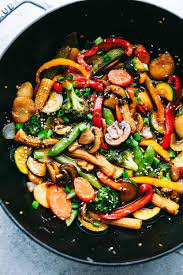

Stirfry: The everyday staple, that you can throw whatever into

Stirfry
A delicious midweek dinner option that you can cook in under 30 minutes, and that you can throw literally whatever you fancy into it. Got leftovers? Fry them. Don't have leftovers? Make enough stir fry that you do! This is going to be a spicy, sesame laden, variant that uses tomato paste for some initial umami
Ingredients
As many forms of vegetable that you want.
Some form of protein (tofu, quorn, meat)
Tomato paste
Soy sauce
Chilies
Rice or noodles
Place your rice onto cook if you're that way inclined, else keep an eye on when your noodles need to go in. You are after all the hoopy frood who is the boss of your noods.
Prep all of your veg and meat into the sizes you want. The smaller, the faster they cook.
I like to cook off my veg first, personally, followed by the proteins since you can bind the sauce to the protein better.
To make the sauce, once your protein is done cooking add your chilis to the oil. Once they're fragrant add a liberal amount of tomato paste and cook until it's starting to stick and caramelise. Then add soy sauce to deglaze.
Add the remaining ingredients back into the pan, and then cook until the sauce has stuck to everything.
Serve onto a plate with your noodles, or rice. You can even toss the ingredients through if you want. Go rogue. Enjoy!